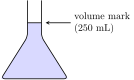
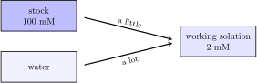
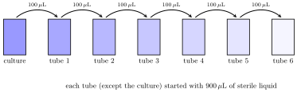

These four exercises come from everyday work in a biology lab, but you don’t need any biology to solve them. Everything is about concentration (how much of something is dissolved in a liquid) and about the chain-link method.
Each exercise comes with a short introduction, followed by the problem. Try to solve it on your own first. Then open the two boxes below the problem, one at a time:
The first box shows how to set up the problem: what is the starting point, the goal, and the conversion information.
The second box shows the computation.
If the setup is enough for you to finish the problem alone, that’s even better!
11.1 a salty stock
Many experiments need a liquid with a precise amount of salt dissolved in it. To make it, we weigh some solid salt, put it in a special glass bottle called a volumetric flask, and add water until the liquid reaches a line drawn on the neck of the flask. That line marks the exact volume we want.

The concentration tells us how many moles of salt there are in each liter of the final liquid. A mole is just a very large number of particles (about 6\cdot 10^{23}), and the molar mass tells us how many grams one mole weighs. You can read more about this in concentration and density.
You want to prepare 250 \text{ mL} of a salt solution with a concentration of 0.5 \text{ mol/L}. The salt is NaCl, and its molar mass is 58.44 \text{ g/mol}. How many grams of NaCl should you weigh?
Tipsetup: starting point, goal, conversion
Starting point: the volume we want to make, 250 mL.
Weigh 7.3 g of NaCl, dissolve it in a bit less than 250 mL of water, and then add water until the liquid reaches the mark. The concentration refers to the volume of the final solution, not to the volume of the water we started with.
11.2 from stock to working solution
Chemicals are often stored as a very concentrated liquid, called a stock solution. It saves space in the freezer, and it lasts longer. When we need to use it, we dilute a little bit of the stock with water, to get the working solution, which has the concentration that we need for the experiment.
The unit mM is read “millimolar”, and it means \text{mmol/L}. To measure small volumes, labs use a micropipette, an instrument that measures volumes in microliters (\mu\text{L}). Remember that 1 \text{ mL} = 1000\, \mu\text{L}.

In your freezer there is a stock solution with a concentration of 100 \text{ mM}. You need 10 \text{ mL} of a working solution with a concentration of 2 \text{ mM}. How many microliters of the stock solution do you need to pipette? How much water do you add?
Tipsetup: starting point, goal, conversion
Starting point: the volume we want to make, 10 mL of working solution.
Goal: the volume of stock solution, in \mu\text{L}.
Conversion information:
2 \text{ mmol} \longleftrightarrow 1 \text{ L of working solution} \\
100 \text{ mmol} \longleftrightarrow 1 \text{ L of stock solution} \\
1 \text{ L} = 10^3 \text{ mL} = 10^6\, \mu\text{L}
The first two lines are just the concentrations, written as correspondences (“mM” is \text{mmol/L}). The plan is: first find how much reagent is in 10 mL of working solution, and then find which volume of stock has that same amount.
Pipette 200\,\mu\text{L} of stock and add 10\text{ mL} - 0.2\text{ mL} = 9.8 \text{ mL} of water.
Notice that the amount of reagent (in moles) is the same before and after the dilution: we only added water. Writing this down for the stock (concentration c_1, volume V_1) and for the working solution (c_2, V_2) gives the famous dilution equation:
c_1 V_1 = c_2 V_2
11.3 a 1000× stock
To grow bacteria in the lab we use a liquid growth medium, which is basically food for bacteria. Often, we add an antibiotic to the medium, so that only the bacteria we want will grow, and not any unwanted intruders.
Antibiotics are stored as a strong stock solution. When a stock is 1000 times more concentrated than what we need, we call it a “1000× stock” (read “one thousand X”).
An antibiotic called ampicillin is added to growth medium at a concentration of 100 \,\mu\text{g/mL}. Your stock solution has a concentration of 100 \text{ mg/mL}. How much of the stock solution should you add to 500 \text{ mL} of growth medium?
Tipsetup: starting point, goal, conversion
Starting point: the volume of medium, 500 mL.
Goal: the volume of stock solution, in \mu\text{L}.
Conversion information:
100 \,\mu\text{g} \longleftrightarrow 1 \text{ mL of medium} \\
100 \text{ mg} \longleftrightarrow 1 \text{ mL of stock} \\
1 \text{ mg} = 10^3\, \mu\text{g} \\
1 \text{ mL} = 10^3\, \mu\text{L}
Be careful: the stock is in milligrams and the medium is in micrograms. That’s why we need the third conversion.
Does the result make sense? Dividing 100 \text{ mg/mL} by 100 \,\mu\text{g/mL} gives a factor of 1000, so this is indeed a “1000× stock”. We should then need 500 \text{ mL}/1000 = 0.5 \text{ mL}, which is exactly what we found.
11.4 counting bacteria
How many bacteria are there in a drop of liquid? They are too small to count under the eye, but we can make each one of them visible. If we spread a small drop of liquid on a plate with bacterial food (an agar plate) and leave it in a warm oven overnight, every single bacterium multiplies into a visible dot, called a colony. Counting colonies is counting bacteria.
The problem is that a culture usually has billions of bacteria per milliliter, and we can only count if there are a few dozen on the plate. So we first dilute the culture a lot, and we do it in steps. This is called a serial dilution.

You take 100\,\mu\text{L} of a bacterial culture and add it to a tube with 900\,\mu\text{L} of sterile liquid. After mixing, you take 100\,\mu\text{L} from this tube and add it to another tube with 900\,\mu\text{L} of sterile liquid, and so on, until you have six tubes. You spread 100\,\mu\text{L} from the last tube on an agar plate, and after a night in the oven you count 87 colonies. Each colony grew from a single bacterium. How many bacteria per mL were in the original culture?
Tipsetup: starting point, goal, conversion
Starting point: 87 bacteria, which were in 100\,\mu\text{L} of the last tube.
Goal: bacteria per mL of the original culture.
Conversion information:
1 \text{ mL} = 10^3\, \mu\text{L}
and the dilution factor, which we find now.
Every time we move 100\,\mu\text{L} into 900\,\mu\text{L}, the total volume is 100+900=1000\,\mu\text{L}, and the bacteria spread in a volume 10 times larger. That means the concentration is divided by 10 at each tube. After six tubes, the concentration is divided by 10^6:
\text{concentration in the last tube} = 10^{-6} \cdot \text{concentration in the culture}
Going backwards, from the last tube to the culture, we need to multiply by 10^6.
Notecomputation
The first two factors convert the count on the plate into a concentration in the last tube, and the last factor undoes the dilution:
The factor of 10^6 has no units. It’s our “multiply by one” trick in disguise: the last tube is a million times more diluted, so the original culture must be a million times more concentrated.